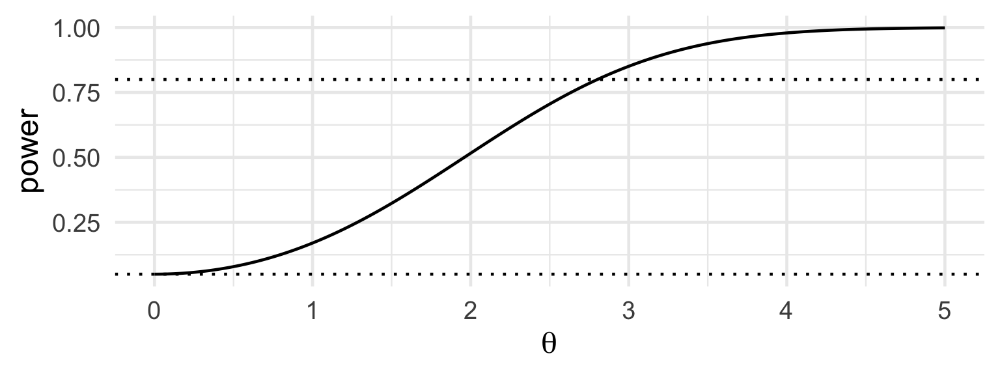
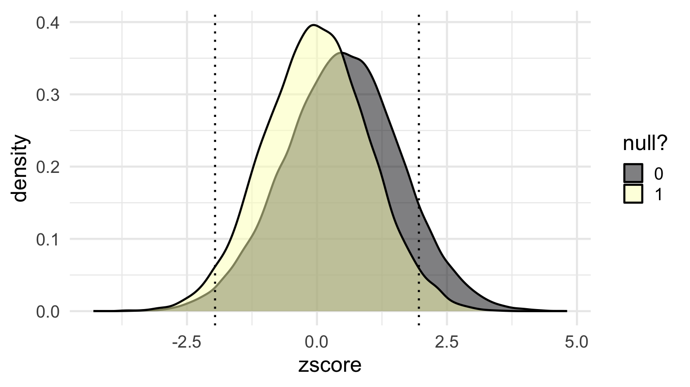
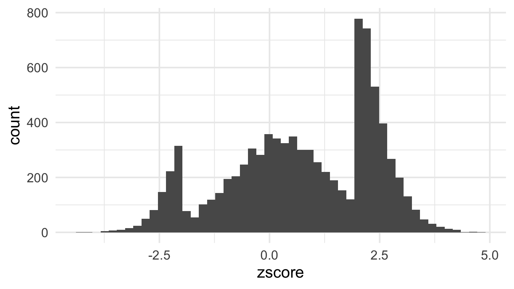

Selection and the replication crisis
Two numbers
- Open Science Collaboration (2015): 100 psychology experiments replicated. 97 originals significant; 36% of replications significant; effect sizes about half.
- Nature survey (2016), 1,576 researchers: over 70% had failed to reproduce someone else’s result, over half their own.
Pre-registration

Large NHLBI trials. Before 2000: 17 of 30 showed benefit (57%). After registration at clinicaltrials.gov became required: 2 of 25 (8%). Kaplan and Irvin (2015), PLoS ONE 10(8): e0132382, Figure 1, CC0.
Write it down
Every study is honest. Results are written up only if significant.
Sketch the histogram of published \(z\)-values.
A million \(z\)-values

Medline abstracts, 1976–2019. “The under-representation of \(z\)-values between \(-2\) and \(2\) is striking.” van Zwet and Cator (2020), arXiv:2009.09440, Figure 1.
Rejection rate and power
\[Z = \frac{\hat\mu}{\mathrm{se}} \sim N(\theta, 1),\qquad \theta = \frac{\mu}{\mathrm{se}} = \frac{\mu\sqrt n}{\sigma}\]
Reject when \(|Z| > 1.96\).
- \(\mu = 0\): \(\;P(|Z|>c) = 2(1-\Phi(c)) = 0.05\)
- otherwise: \(\;\text{power}(\theta) = 1 - \Phi(c-\theta) + \Phi(-c-\theta)\)

A world of studies

What gets published

Nine studies in ten are written up only if \(|z| > 1.96\). Every test honest.
Predict
Among published studies whose null was true and which had to pass the filter: the average of \(|z|\)?
The significance filter
\(Z \sim N(\theta, 1)\), seen only when \(Z > c\):
\[E[Z \mid Z > c] = \theta + \frac{\phi(c-\theta)}{1 - \Phi(c-\theta)}\]
\(\theta = 0\), \(c = 1.96\): \(\quad\phi(1.96) = 0.0584,\qquad 1 - \Phi(1.96) = 0.025\)
Compute \(E[Z \mid Z > 1.96]\).
2.3 standard errors
A true null that got published is, on average, 2.3 standard errors from zero.
Not because anyone cheated, but because you only saw it when it was large.
Exaggeration
| \(\theta\) | 0.5 | 1 | 1.5 | 2 | 2.5 | 3 | 4 |
|---|---|---|---|---|---|---|---|
| power | 0.07 | 0.17 | 0.32 | 0.52 | 0.71 | 0.85 | 0.98 |
| \(E[Z \mid Z>c]\) | 2.41 | 2.49 | 2.61 | 2.77 | 2.99 | 3.27 | 4.05 |
| ratio to truth | 4.8 | 2.5 | 1.7 | 1.4 | 1.2 | 1.1 | 1.0 |
“the relative conditional bias and the exaggeration factor are decreasing functions of the power” – van Zwet and Cator (2020)
Bias and variation
Power: how much the estimate varies.
Exaggeration: a bias in what gets published.
The file-drawer effect turns variance into bias.
In pairs
How much of the replication crisis does selection alone explain, without anyone behaving badly?
One sentence each, with a number in it if you can.
Why most published research findings are false
Ioannidis (2005):
\[P(H_0 \text{ true} \mid \text{reject}) = \frac{(1-p)\,\alpha}{(1-p)\,\alpha + p\,(1-\beta)}\]
\(p\) = share of tested hypotheses that are true; \(1-\beta\) = power.
Best of \(k\) null tests: \(\;P(\text{some } p<0.05) = 1 - 0.95^k\), \(\;=0.64\) at \(k=20\).
208 or 20,000?
Stessman et al. (2017), Nature Genetics: 208 genes sequenced in 11,730 cases; 91 risk genes, 38 new.
Threshold corrected for 208 tests. Mutation counts drew on exome studies of about 20,000 genes.
\[0.05/208 = 2.4\times10^{-4} \qquad 0.05/20{,}000 = 2.5\times10^{-6}\]
Corrected (Daly and colleagues, bioRxiv 2017): 1 of the 38 remains.
“We should have seen that when we went across the tables, and we just didn’t.” – Evan Eichler, to Spectrum
ASA Ethical Guidelines (2022), B.3
“…transparent about a priori versus post hoc objectives and planned versus unplanned statistical practices. Discloses when multiple comparisons are conducted and any relevant adjustments.”
A/B testing
A company runs 200 A/B tests a year. It ships a variant only if the measured lift is significant at 5%. Six months later it re-measures the shipped variants.
- Which way is the average shipped lift biased, relative to the true lifts?
- Which ingredient of the formula does the company control, and what happens to the bias if it changes it?
- Who benefits from the bias being invisible?
Individually, written.
The standing question
Who benefited from that choice being invisible? And would a more competent analyst have chosen differently?
The next two examples illustrate the second part of the standing question.
Lucia de Berk
Convicted 2003, appeal 2004. Prosecution: 1 in 342 million that the incidents fell on her shifts by chance.
Three wards: \(p_1 \times p_2 \times p_3 \approx 1/342{,}000{,}000\). A product of \(p\)-values is not a \(p\)-value. Fisher: \(-2\sum \log p_i \sim \chi^2_6\) gives about 1 in a million.
\(P(\text{pattern} \mid \text{coincidence}) \neq P(\text{coincidence} \mid \text{pattern})\).
Incidents were classed as suspicious partly because she was there. Recomputed (Gill and colleagues): between about 1 in 9 and 1 in 50.
Reopened 2008. Acquitted 2010.
Ofqual, 2020
No exams. Each school submits grades and a rank order.
Student at rank \(r\) of \(n\) gets the grade at the \(r/n\) point of the school’s predicted distribution, built from its 2017–19 results.
The student’s work enters only through \(r\). Cohorts under 15: teachers’ grades used.
13 August: about 36% of A-level grades one grade below the teacher’s, 3% two below. 17 August: withdrawn.
Two lenses this week
- Which comparison gets reported? Inside a study: the best of \(k\), the forking paths, 208 or 20,000.
- Who is in the data? Between studies: the literature is the published studies, and the file drawer is missing in a known direction.
…and why?
Next week
Groups and averages: what an average of a group says about a member of it, and what a feed that shows you the most extreme items does to your picture of a group.
Required reading: David Freedman on ecological inference – the ecological fallacy, Goodman’s regression, and the voting-rights cases where it was used.
Prepare and bring: one published claim about a difference between two groups. Write down the comparison that was reported, and one that could have been reported instead.
Backup
Power of the \(z\)-test
\(Z \sim N(\theta,1)\), reject if \(|Z| > c\).
\[ \begin{aligned} P(|Z|>c) &= P(Z > c) + P(Z < -c)\\ &= P(Z-\theta > c-\theta) + P(Z-\theta < -c-\theta)\\ &= 1 - \Phi(c-\theta) + \Phi(-c-\theta). \end{aligned} \]
At \(\theta = 0\): \(2(1-\Phi(c)) = \alpha\).
The truncated normal mean
\[E[Z\mid Z>c] = \frac{\int_c^\infty z\,\phi(z-\theta)\,dz}{1-\Phi(c-\theta)}\]
Substitute \(u = z-\theta\):
\[\int_{c-\theta}^\infty (u+\theta)\,\phi(u)\,du = \theta\,(1-\Phi(c-\theta)) + \int_{c-\theta}^\infty u\,\phi(u)\,du\]
Since \(\phi'(u) = -u\,\phi(u)\): \(\;\int_{c-\theta}^\infty u\,\phi(u)\,du = \phi(c-\theta)\).
\[\Rightarrow\quad E[Z\mid Z>c] = \theta + \frac{\phi(c-\theta)}{1-\Phi(c-\theta)}\]
The false discovery proportion
Share \(p\) of tested hypotheses true; level \(\alpha\); power \(1-\beta\).
\[P(\text{reject}) = (1-p)\,\alpha + p\,(1-\beta)\]
\[P(H_0\mid \text{reject}) = \frac{(1-p)\,\alpha}{(1-p)\,\alpha + p\,(1-\beta)}\]
| \(p\) | power | \(P(H_0\mid\text{reject})\) |
|---|---|---|
| 0.5 | 0.8 | 0.06 |
| 0.1 | 0.8 | 0.36 |
| 0.1 | 0.2 | 0.69 |